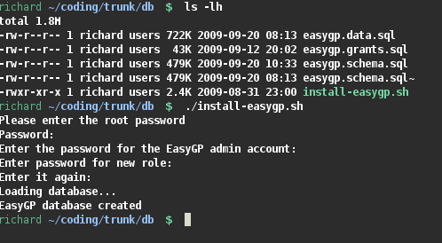

Manual build of database
If there isn't a database package for your distro (currently, that's everyone)
you can build a database directly from SQL sources in the SVN repository.
First you need to install
PostgreSQL for your system. Please see your distros documentation for this and ensure that the postmaster
is running and test that you can create and view databases using
pgAdmin before proceeding. All distros will have packages for pgAdmin3.
Next, download the SVN (as above), and fire up a shell. Go to the `trunk' directory
downloaded by SVN and then the `db' subdirectory. There run the install script:
./install-easygp.sh
This should install a working database for most sensible setups of PostgreSQL. The
script will ask you to enter your root password (for Ubuntu that's your user password)
and then an administrator's password for the EasyGP database. (ideally this should
be different to the root password). The administrator user is always called `easygp'.
The console output should be similar to the one shown below.

Note it is impossible to cover every possible Postgres setup and somebody is bound to
have this script fail on them. If that happens please send a bug report with the
contents of the file `/tmp/easygp-errors'. You may encounter non-critical errors for example if
you have manually used the dropdb command in a terminal but not removed the easygp or staff role.
Once you've built the database, you can check it if you like using pgAdmin.
To run easygp you have two options
- If using the SVN go to the startup folder and set modStartup as the startup form
- If running an executable simply execute easygp.gambas.
As this will be the first time the program has run, as setup wizard will appear.